Requiem: 110 mph Competition Aircraft
From an oversized foam prototype that couldn't fly to a lightweight V-tail aircraft that reached 110 mph, through one complete redesign and many rounds of iteration.

Overview
As Design & Manufacturing Lead for our AIAA team, I led the design and build of a speed-optimized aircraft against strict aerospace requirements, tracking requirements and following build and test procedures throughout. I wrote proposals and presented preliminary design reviews to judges, using SolidWorks, XFLR5, and MATLAB to justify our aerodynamic and motor/propeller choices.
Version 1: the first prototype
Our first aircraft had a pink foam fuselage and an H-tail. It was too large to fly, so we redesigned it from scratch.
Version 2: Requiem, a complete redesign
Requiem changed almost everything: a 3D-printed bullet-shaped fuselage, a carbon fiber tail boom, and a V-tail instead of the H-tail.
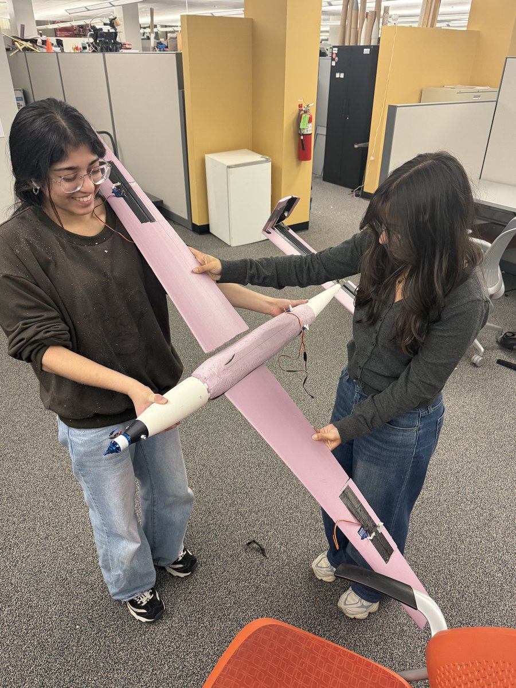
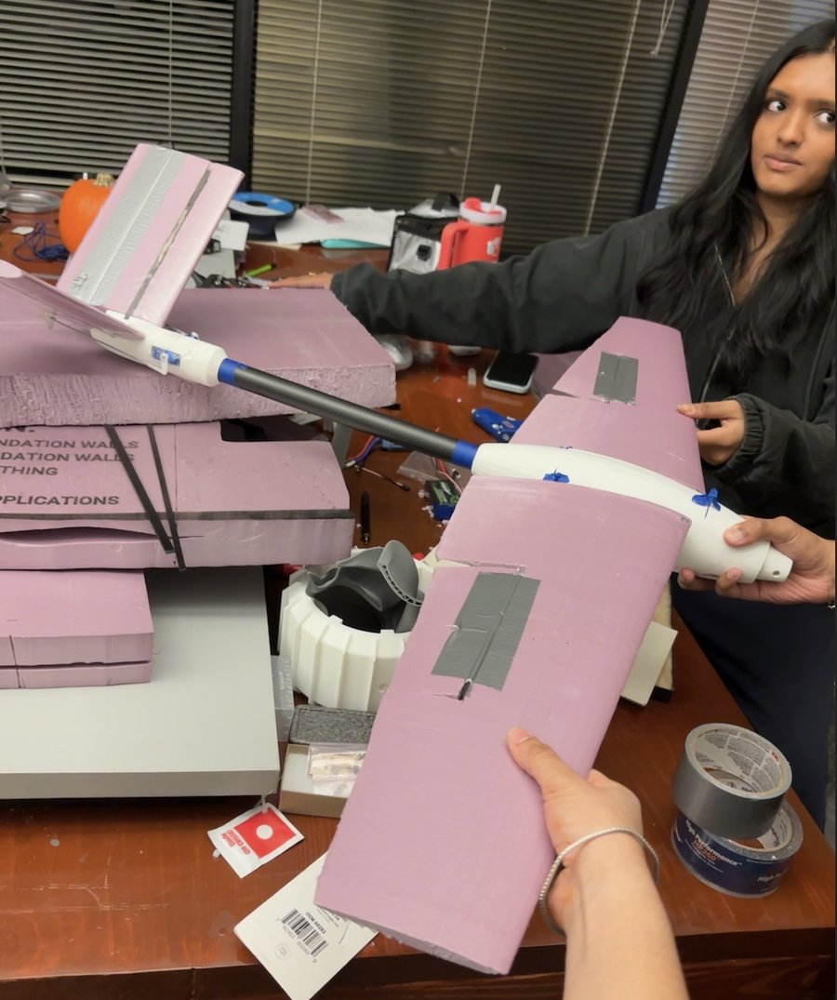
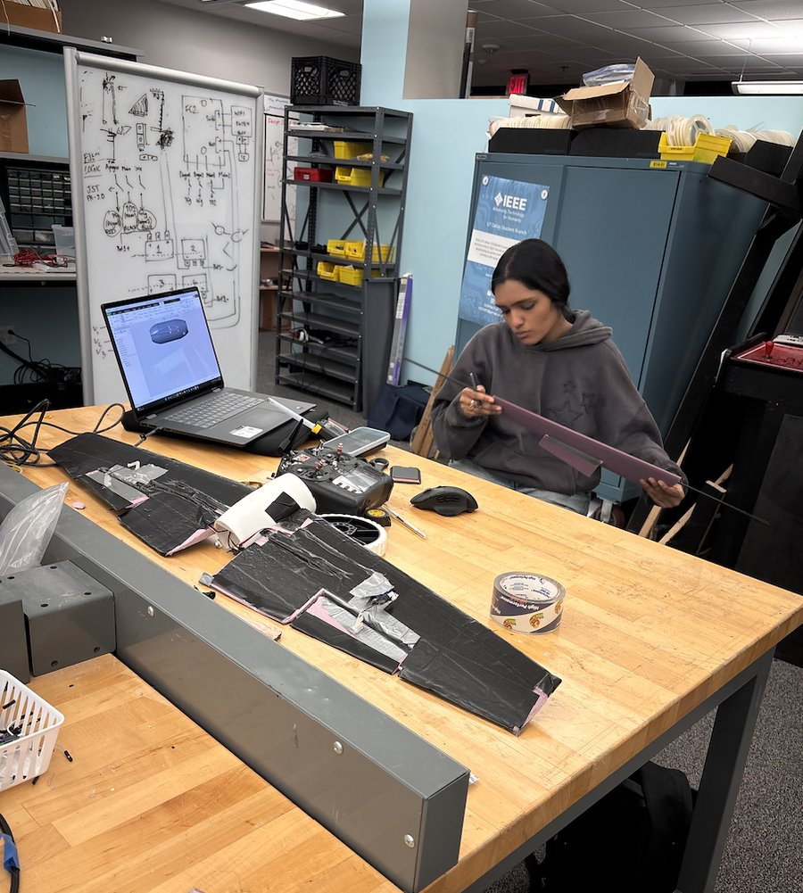
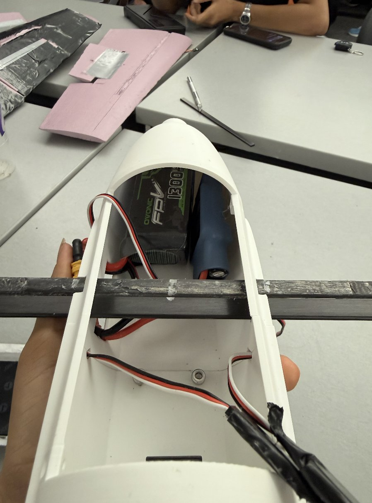
Iterating on Requiem
We rebuilt Requiem again and again. Each version:
- Was lighter: we switched the printed parts to lightweight PLA.
- Was easier to fix on competition day: we changed the fasteners and added a fuselage hatch, so batteries, wiring, and damaged parts can be reached and swapped quickly at the field.
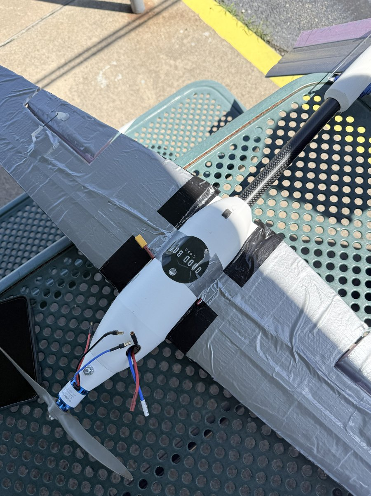
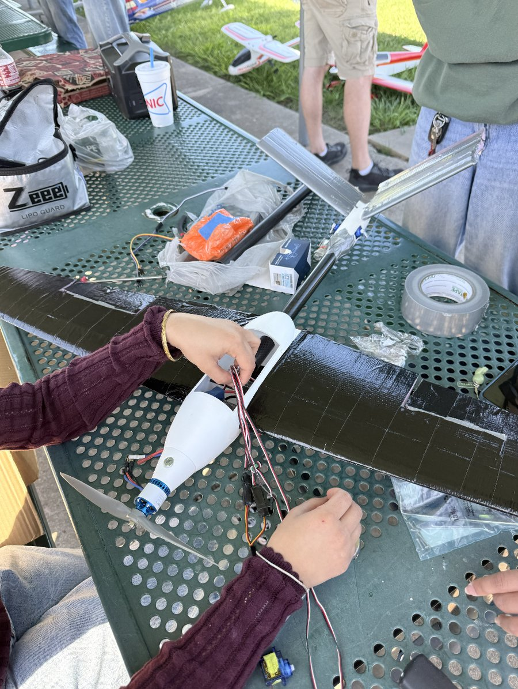
Final version: 3D-printed tail
In the final iteration, we 3D-printed the tail as well, giving us a printed fuselage and tail joined by the carbon boom.
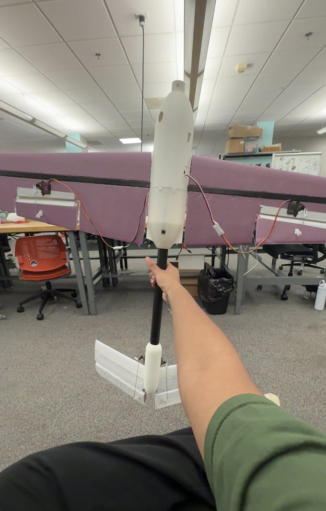
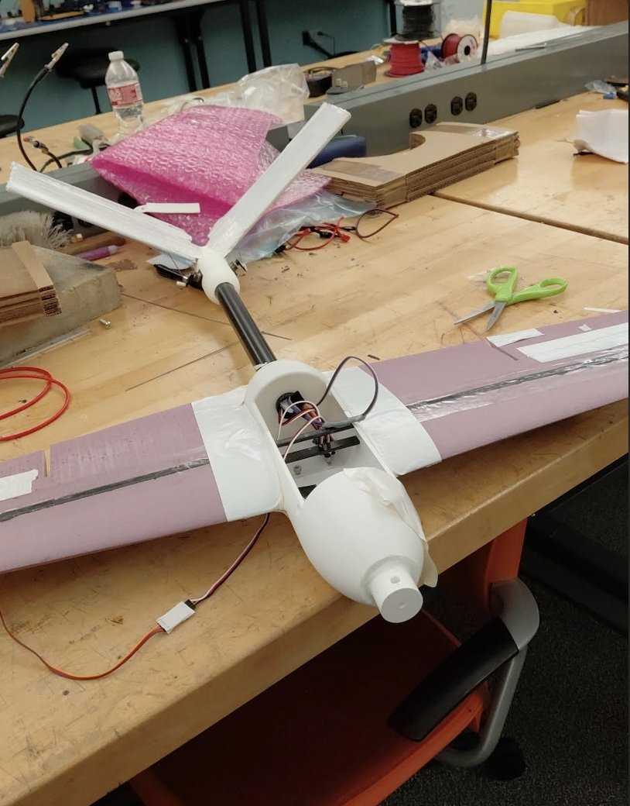
Propulsion
- Motor: 1300 kV brushless, rated 680 W
- Propeller: APC 8×10E
- Battery: 4S LiPo
Simulation & stability analysis
I ran all of the aircraft's aerodynamic and stability simulations in XFLR5 (vortex lattice method), to confirm Requiem would be stable before we built and flew it.
Mass model and geometry
I modeled each component (servos, carbon rod and spar, electronics, and the rest of the hardware) as a point mass at its real position, so XFLR5 could calculate the center of gravity of the 1.014 kg aircraft. The fuselage was left out of the aerodynamic model, as XFLR5's guidelines recommend, and the V-tail was modeled as an angled elevator.
- Wing: 1.00 m span, 0.15 m² area (aspect ratio 6.7)
- V-tail: 0.06 m² on a 0.48 m lever arm, giving a tail volume of 0.85
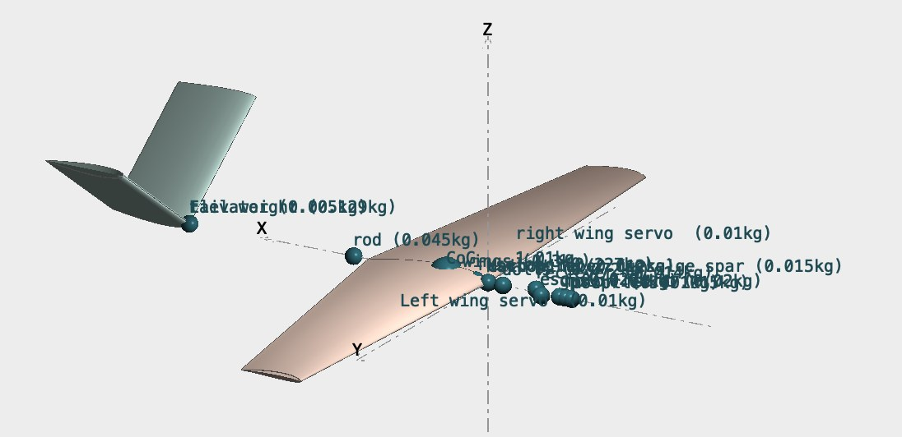
Static stability
A fixed-speed analysis at 20 m/s showed the aircraft is statically stable: the pitching moment (Cm) decreases as angle of attack increases, so the plane naturally returns to its trim angle after a disturbance.
- Trim: Cm crosses zero at about +0.6° angle of attack (CL ≈ 0.23), so the plane trims hands-off at about 22 m/s.
- Static margin: about 25%, a conservative, very stable setup.
- Max lift-to-drag: about 19 at around 4° (wing and tail only).
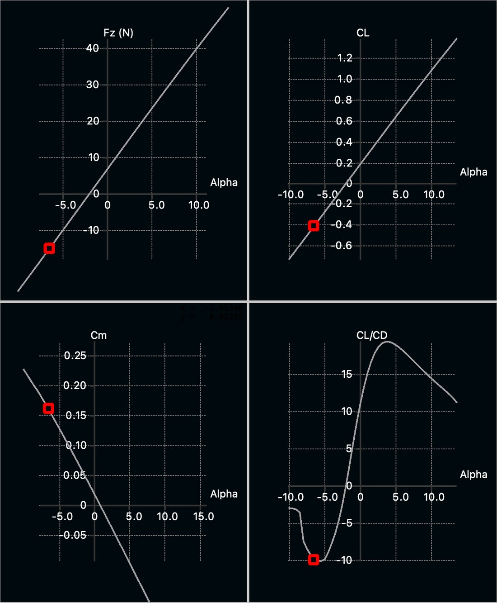
Dynamic stability
I ran a stability analysis to check how the aircraft responds over time after a disturbance:
- Phugoid (slow pitch and speed oscillation): stable, with an 11.5 s period and a damping ratio of 0.03. The oscillation dies out slowly, which is typical of a clean, low-drag aircraft.
- Dutch roll (yaw and roll wobble): stable, at 1.89 Hz with a damping ratio of 0.17. It settles in about 2 seconds.
- Spiral mode: mildly unstable, doubling in about 10 s. This comes from the combination of a main wing with no dihedral and a V-tail with strong directional stability. The divergence is slow enough for the pilot to correct easily, and it's common on sport and racing aircraft. Adding 2–3° of wing dihedral would make it neutral.
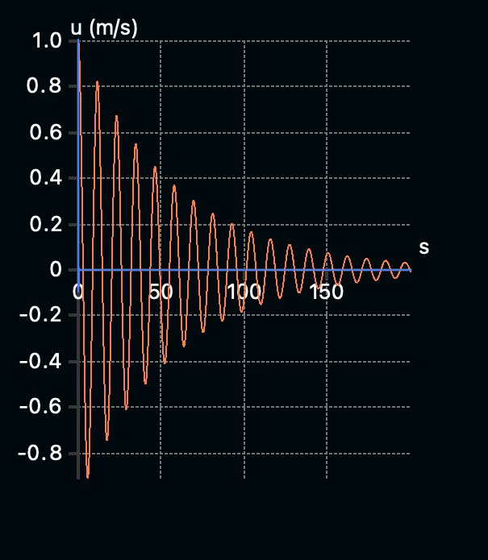
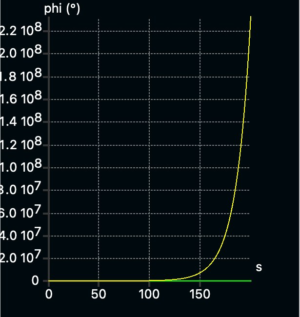
Results
Requiem reached a top speed of 110 mph.